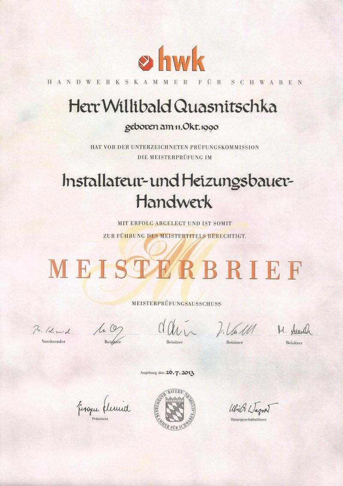
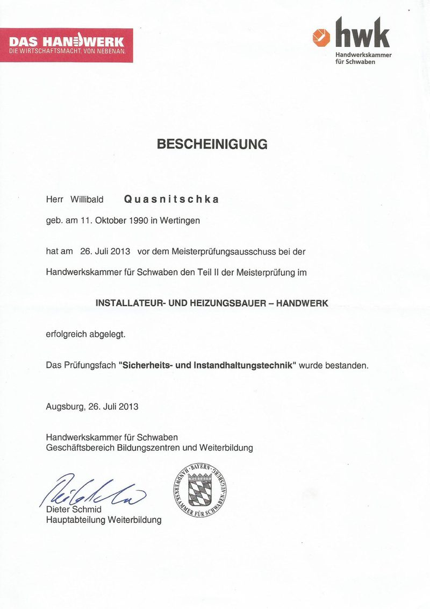

Wir hören zuerst zu.
Jedes Projekt beginnt mit Ihren Zielen, Ihrem Budget und Ihren Anforderungen – nicht mit einem Standardangebot.
Die Donau-Ries Haustechnik GmbH ist Ihr Meisterbetrieb für Heizung, Sanitär und Lüftung in Harburg – mit eigener Mannschaft von rund 20 Mitarbeitern, Produkten namhafter Hersteller und einem klaren Versprechen: alles aus einer Hand.
Gegründet 2017 von Handwerksmeister Willibald Quasnitschka und seit 2020 als GmbH, sind wir heute ein Team von rund 20 Mitarbeitern. Wir verbinden solides Handwerk mit moderner Technik und begleiten unsere Kundinnen und Kunden von der ersten Idee bis zur fertigen Übergabe – alle Gewerke selbst koordiniert, übersichtlich und in einer Hand.
Unser Betrieb wird von einem geprüften Handwerksmeister geführt: Willibald Quasnitschka hat die Meisterprüfung im Installateur- und Heizungsbauer-Handwerk vor der Handwerkskammer für Schwaben erfolgreich abgelegt. Für Sie bedeutet das geprüfte Fachkompetenz, saubere Ausführung und gebündelte Verantwortung – vom ersten Gespräch bis zur Übergabe.




Jedes Projekt beginnt mit Ihren Zielen, Ihrem Budget und Ihren Anforderungen – nicht mit einem Standardangebot.
Verbindliches Festpreis-Angebot, klare Termine und – wo nötig – die Abstimmung mit dem Fachplaner geben Ihnen Sicherheit von Anfang an.
Unsere eigene Mannschaft koordiniert alle Gewerke – Sie haben einen Ansprechpartner bis zur Übergabe.